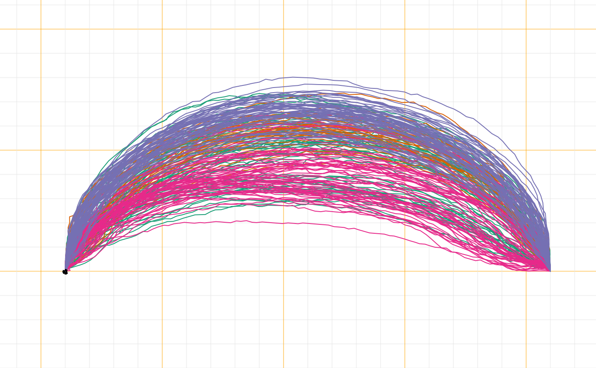

Pile all shapes in the same graphical window. Useful to check
their normalization in terms of size, position, rotation, first point, etc.
It is, essentially, a shortcut around paper + drawers of the grindr family.
pile(coo, f, sample, subset, pal, paper_fun, draw_fun, transp, ...) # S3 method for default pile( coo, f, sample, subset, pal = pal_qual, paper_fun = paper, draw_fun = draw_curves, transp = 0, ... ) # S3 method for list pile( coo, f, sample = 64, subset = 1000, pal = pal_qual, paper_fun = paper, draw_fun = draw_curves, transp = 0, ... ) # S3 method for array pile( coo, f, sample = 64, subset = 1000, pal = pal_qual, paper_fun = paper, draw_fun = draw_landmarks, transp = 0, ... ) # S3 method for Out pile( coo, f, sample = 64, subset = 1000, pal = pal_qual, paper_fun = paper, draw_fun = draw_outlines, transp = 0, ... ) # S3 method for Opn pile( coo, f, sample = 64, subset = 1000, pal = pal_qual, paper_fun = paper, draw_fun = draw_curves, transp = 0, ... ) # S3 method for Ldk pile( coo, f, sample = 64, subset = 1000, pal = pal_qual, paper_fun = paper, draw_fun = draw_landmarks, transp = 0, ... )
Arguments
| coo | a single shape or any Coo object |
|---|---|
| f | factor specification |
| sample |
|
| subset |
|
| pal | palette among palettes (default: pal_qual) |
| paper_fun | a papers function (default: |
| draw_fun | one of drawers for |
| transp |
|
| ... | more arguments to feed the core drawer, depending on the object |
Details
Large Coo are sampled, both in terms of the number of shapes and of points to drawn.
Note
A variation of this plot was called stack before Momocs 1.2.5
See also
Other grindr:
drawers,
layers_morphospace,
layers,
mosaic_engine(),
papers,
plot_LDA(),
plot_NMDS(),
plot_PCA()
Examples
# all Coo are supported with sensible defaults pile(bot) # outlines pile(olea, ~var, pal=pal_qual_Dark2, paper_fun=paper_grid) # curves  pile(wings) # landmarks # you can continue the pipe with compatible drawers pile(bot, trans=0.9) %>% draw_centroid # if you are not happy with this, build your own ! # eg see Momocs::pile.Out (no quotes) my_pile <- function(x, col_labels="red", transp=0.5){ x %>% paper_chess(n=100) %>% draw_landmarks(transp=transp) %>% draw_labels(col=col_labels) } # using it wings %>% my_pile(transp=3/4)  # and as gridr functions propagate, you can even continue: wings %>% my_pile() %>% draw_centroid(col="blue", cex=5)  # method on lists bot$coo %>% pile # it can be tuned when we have a list of landmarks with: wings$coo %>% pile(draw_fun=draw_landmarks) # or on arrays (turn for draw_landmarks) wings$coo %>% l2a %>% #we now have an array pile